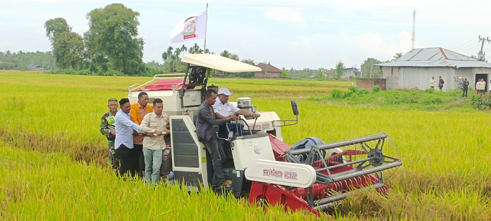

Visi
Visi resmi organisasi menunggu naskah yang disahkan pengelola.
Ruang informasi petani Bireuen
Pusat informasi organisasi, kegiatan, edukasi, dan aspirasi petani Kabupaten Bireuen.
Konten yang belum memiliki sumber resmi ditandai jelas dan menunggu verifikasi pengelola.

Tentang organisasi
Website ini menjadi wadah informasi organisasi yang transparan, dekat dengan petani, dan mudah diakses masyarakat.
Lihat visi dan misi →Nama pengurus, alamat, kontak, program, dan berita akan ditampilkan setelah diberikan serta disetujui pengelola organisasi.
Arah organisasi
Visi resmi organisasi menunggu naskah yang disahkan pengelola.
Misi resmi organisasi menunggu naskah yang disahkan pengelola.
Profil organisasi
Lengkapi nama dan foto berdasarkan data resmi organisasi.
Wilayah kerja
Daftar Ketua KORCAM akan ditambahkan setelah dikonfirmasi pengelola.
Kabar terbaru
Gunakan pencarian untuk menemukan artikel berdasarkan judul atau kategori.
Aktivitas lapangan
Dokumentasi kegiatan, penerapan teknologi, dan pendampingan pertanian di Kabupaten Bireuen.
Pembaruan pertanian
Harga, cuaca, bantuan, pupuk, dan program harus diperbarui dengan tanggal serta sumber yang jelas.
Suara petani
Kirim saran, kendala, atau informasi kegiatan. Data tidak akan dipublikasikan otomatis.
Dokumentasi
Foto ditampilkan setelah diunggah dan datanya dilengkapi oleh pengelola.
Hubungi kami
Alamat sekretariat:
Jl. Medan - Banda Aceh, Desa Seuleumbah, Kec. Jeumpa, Kab. Bireuen, Prov. Aceh.